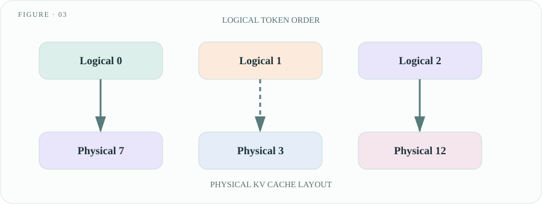

这是全课程最重要的两章之一。PagedAttention 是 vLLM 的灵魂——没有它，就没有 vLLM。今天咱们从操作系统虚拟内存的角度切入，理解它是怎么把 GPU 显存利用率从 20-40% 拉到 96% 的。

INTERACTIVE LAB
动手分配 KV Cache Blocks
观察逻辑上连续的 token 如何映射到不要求连续的物理块。这里使用教学用的 4-token block。
已分配 2 / 6 个块 · 尾块剩余 0 个 token 槽位。
3.1 问题的本质：显存碎片
第一章提到，传统方式为每个请求预分配连续的显存存放 KV cache。咱们用一个具体例子说清楚问题在哪：
GPU 显存（简化）：[A████████░░░░░░░░░░░░][B█░░░░░░░░][C██████████░░]
request A (预留 1000) request B (预留 200) request C (预留 500)
问题 1 — 内部碎片：B 预留了 200 token 空间但只生成 50 token，150 token 空间白白浪费
问题 2 — 外部碎片：B 释放后留下 [░░░░] 空洞，和新来的 request D 所需空间不匹配
问题 3 — 低利用率：整体显存看似有空间，但东一块西一块，凑不出一块连续的这跟 1960 年代 OS 遇到的内存碎片问题一模一样的。当时的解法是虚拟内存 + 分页——vLLM 把它搬到了 GPU 显存。
3.2 类比：OS 虚拟内存
| 概念 | OS 虚拟内存 | PagedAttention |
|---|---|---|
| 基本分配单元 | Page（页，4KB） | Block（块，大小由配置与模型实现决定） |
| 逻辑→物理映射 | Page Table（页表） | Block Table（块表） |
| 按需分配 | Demand Paging（按需调页） | 按需分配 Block |
| 物理存储 | 物理页可以不连续 | 物理 Block 可以不连续 |
| 碎片问题 | 外部碎片 <1% | 碎片 <4% |
核心思想只有一个：把逻辑上连续的东西，打散存到物理上不连续的地方，通过一张映射表把它们"缝"起来。
3.3 Block Table：逻辑到物理的映射
假设一个请求生成了 64 个 token 的 KV cache，Block 大小是 16 token：
逻辑 token 位置: [0..15] [16..31] [32..47] [48..63]
↓ ↓ ↓ ↓
物理 Block: block_7 block_3 block_12 block_5
Block Table = [7, 3, 12, 5]计算 Attention 时，GPU kernel 是这样找到 K/V 数据的：
给定: 逻辑位置 = 35
1. block_index = 35 / 16 = 2 → 在 Block Table 的第 2 个位置
2. physical_block = BlockTable[2] = 12 → 物理 Block 12
3. offset = 35 % 16 = 3 → Block 12 内第 3 个位置
4. 最终地址: block_12_base + 3 * sizeof(KV_per_token)关键来了：Block Table 非常小。一个 request 即使生成 8192 token，Block Table 也只有 8192/16 = 512 个元素（整数数组，512 × 4 bytes = 2KB）。对比 KV cache 本身（4GB），Block Table 的额外开销可以忽略不计。
3.4 按需分配：彻底消灭内部碎片
传统方式必须在请求开始时一次分配足够的空间。PagedAttention 只在真正需要时才分配新 Block：
请求 A:
├── 开始: 分配 1 block (16 tokens) — 只有 prompt 需要
├── Step 1-16: 使用 block_0，满了 → 分配 block_7
├── Step 17-32: 使用 block_0 + block_7，满了 → 分配 block_3
├── Step 33-48: 使用 block_0 + block_7 + block_3
├── 生成结束（45 token）: 释放所有 3 个 block
└── 平均只占用恰好需要的空间每个 Block 只在"上一块满了"的时候才分配。最后一个 Block 可能有 0-15 个 token 的浪费——这就是那不到 4% 的碎片。
3.5 Free Block Pool：解决外部碎片
所有物理 Block 在一个全局空闲池中管理：
Free Block Pool: [0, 1, 2, 3, 4, 5, 6, 7, 8, 9, 10, 11, 12, 13, 14, 15, ...]
请求 A 来了: 取前 3 个 → free pool = [3, 4, 5, ..., 15, ...]
请求 B 来了: 取前 2 个 → free pool = [5, 6, 7, ..., 15, ...]
请求 A 结束: 归还 block_0, block_1, block_2 → free pool = [0, 1, 2, 5, 6, 7, ..., 15, ...]
请求 C 来了: 需要 4 个 → 取 [0, 1, 2, 5]（虽然是分散的但没问题！）注意请求 C 取到的 [0, 1, 2, 5] 不是连续的。但对 PagedAttention 来说完全 OK——Block Table 会把它们"缝"起来。
关键洞察：PagedAttention 不要求物理 Block 连续。这彻底解决了外部碎片——只要能找到足够数量的 Block（不管它们在哪里），就能满足新请求的需求。
3.6 显存利用率对比
混合长短 prompt 的场景效果最好——因为传统分配在这种场景下碎片最严重，而 PagedAttention 不在乎长度差异。
实战经验：如果你发现 GPU 显存利用率很低（<50%）但 vllm 报告显存已满，检查一下是否有大量短请求和长请求混合——传统推理框架在这个场景下碎片极严重，vLLM 能大幅改善。
今天咱们理解了 PagedAttention 的"思想篇"——虚拟内存+分页。下一章咱们深入实现细节：Block Table 怎么和 Attention kernel 配合？Slot Mapping 是什么？Copy-on-Write 怎么实现前缀共享？
参考资料与证据
- PagedAttention 论文（SOSP 2023）§2；§3
- vLLM PagedAttention 实现PagedAttention.split_kv_cache；write_to_paged_cache